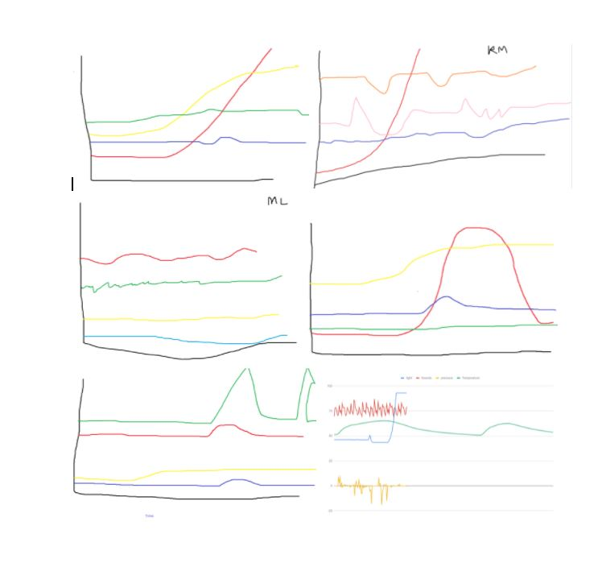
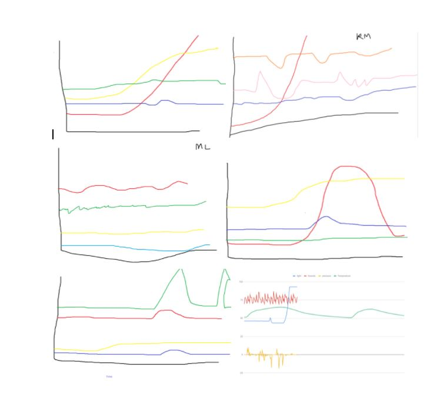
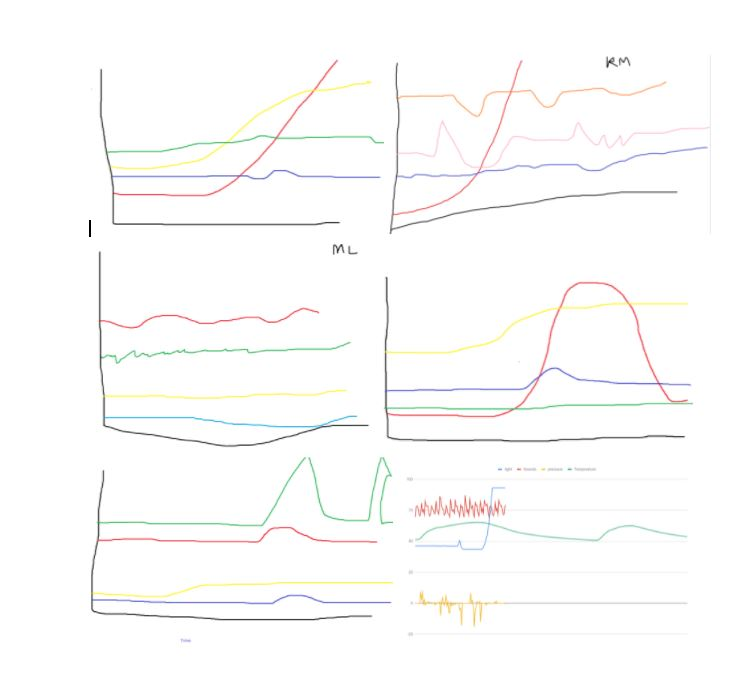

This is my Portfolio Page!
This is Project One!

Our project is a storytelling, choose your own adventure game called Gorilla Warfare. It is about raiding a monkey temple to discover the secret banana stash. It has a title screen, and 3 later screenstates which develop the story. The title screen controls a turtle to spell out our title, using a while-loop to create the L’s in Gorilla. The next scene involves encountering a wild Boss Monkey, which updates to the second screenstate after the user inputs “banana.” This second screen involves using a banana to attack the opposing monkey, which activates an iteration loop when the user inputs “pew.” This causes a banana-like projectile (turtle) that both changes size and color after to advance forward, stamping and clearing its previous stamp to make it appear as if it is moving in slow motion. After the monkey boss is defeated, the user is prompted to proceed to the treasure room by inputting “reward". This opens the final screenstate, congratulating the user for completing Gorilla Warfare and stealing the bananas.
This is Project Two!
Our Project is a variation of the Fruit Ninja game that everyone loves! The objective of this game is to score as many point as possible by using the onclick key to click on the fruits. There is a background image for the title screen and a welcome message for the player. To make the fruits move you can use the "a, w, and p" keys, and you can also click with your mouse to achieve a higher score. Once you finish the game because the timer ends, you are presented a end of the game screen.
This is Project Three!
This Project is a variation of the known and loved snake game! The objective of our game is to hit the apple with the snake as many times as possible. There is a score counter and also a username input at the top of the screen. You should use the arrow keys to move the snake up, down, left, and right respectively. The game contains two screens: a welcoming screen and a game screen. The game also has two different customes, one for the welcome screen and one for the game screen.
This is Project Four!
 

We believe that the planet is the region of Inland Forests because of the smooth temperature characteristic that we gathered, and because we understood that the wind was constant and critter noises are higher levels compared to the critter noises of the marshlands. The noise of the wind is also constant, which leads us to the conclusion of the inland forests. We created a graph with four data plots. The red is sounds, the yellow is pressure, the green is temperature, and the blue is light over time. Inland forests have smooth temperatures that vary very little throughout the day, as is evident by the green graph. Low ambient light during the day time is characteristic of the low levels of lumens. The constant howl of the wind and occasional thunderstorms is evident by the spikes in the red graph. Lastly, Little to no wind is evident to the pressure graph.
This is Project Five!

In this project we learned how to extract data from online data sets, and to manipulate the data set by using python coding procedures to create visualizations. This specific bar graph shows information we gathered from a honey production data set, and we used it to plot the means of honey production in all 50 states. The bar graph is over a big interval of years and measures honey production in the states.
This is Project Six!
The simulation we used was the natural selection of moths. It started with a grey background and moths flying around. These moths would die or be eaten after a period of time and reproduce with a chance to mutate a shade lighter or darker. The likelihood of the moths being eaten depended on their lightness or darkness. Initially, the light moths survived, but the simulator was made to show the effects of population on peppered moths. When you added pollution to the simulation, the patch got darker, and the darker moth survivability increased. The moths would mutate accordingly to best survive to their environment, affected by pollution.
This is Project Three!
This Project is a variation of the known and loved snake game! The objective of our game is to hit the apple with the snake as many times as possible. There is a score counter and also a username input at the top of the screen. You should use the arrow keys to move the snake up, down, left, and right respectively. The game contains two screens: a welcoming screen and a game screen. The game also has two different customes, one for the welcome screen and one for the game screen.
This is Project Four!

We believe that the planet is the region of Inland Forests because of the smooth temperature characteristic that we gathered, and because we understood that the wind was constant and critter noises are higher levels compared to the critter noises of the marshlands. The noise of the wind is also constant, which leads us to the conclusion of the inland forests. We created a graph with four data plots. The red is sounds, the yellow is pressure, the green is temperature, and the blue is light over time. Inland forests have smooth temperatures that vary very little throughout the day, as is evident by the green graph. Low ambient light during the day time is characteristic of the low levels of lumens. The constant howl of the wind and occasional thunderstorms is evident by the spikes in the red graph. Lastly, Little to no wind is evident to the pressure graph.
This is Project Five!
In this project we learned how to extract data from online data sets, and to manipulate the data set by using python coding procedures to create visualizations. This specific bar graph shows information we gathered from a honey production data set, and we used it to plot the means of honey production in all 50 states. The bar graph is over a big interval of years and measures honey production in the states.
This is Project Six!
The simulation we used was the natural selection of moths. It started with a grey background and moths flying around. These moths would die or be eaten after a period of time and reproduce with a chance to mutate a shade lighter or darker. The likelihood of the moths being eaten depended on their lightness or darkness. Initially, the light moths survived, but the simulator was made to show the effects of population on peppered moths. When you added pollution to the simulation, the patch got darker, and the darker moth survivability increased. The moths would mutate accordingly to best survive to their environment, affected by pollution.
This is Project Five!